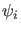
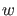
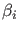
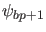

Next: Fold of cycles initialization Up: Continuation of fold bifurcation Previous: Mathematical definition Contents
In the  expressions  is the vector computed in (57) and
 (branch parameter) is a component of  .
.
In the second expression , we compute  by solving
by solving
So the third expression for the normal form coefficient becomes
In the fourth expression,  is the monodromy matrix.
is the monodromy matrix.
In the fifth expression,  is the
is the
 matrix that restricts the
matrix that restricts the  matrix
matrix  to the space orthogonal to the two-dimensional left eigenspace of the two multipliers that are closest to
to the space orthogonal to the two-dimensional left eigenspace of the two multipliers that are closest to  .
.
The number of branch parameters is not fixed. If the number of branch parameters is  then this matrix has three more rows and columns. This singularity matrix is automatically extended:
then this matrix has three more rows and columns. This singularity matrix is automatically extended: